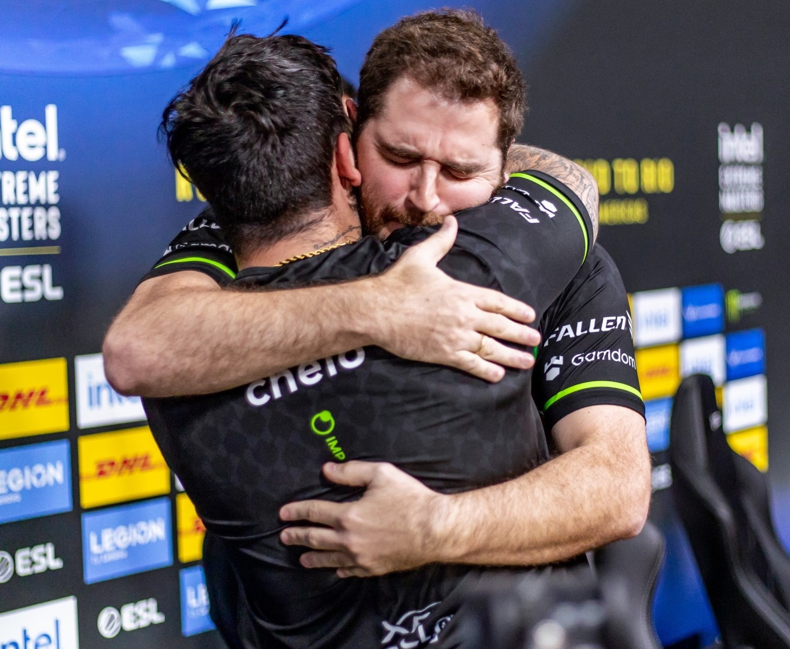
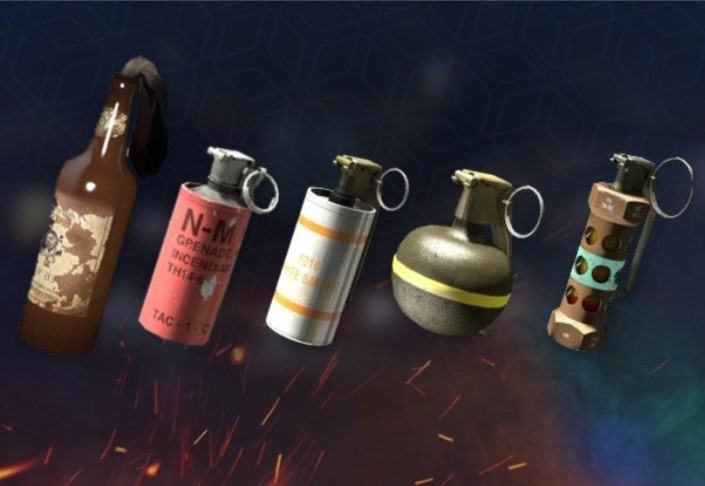
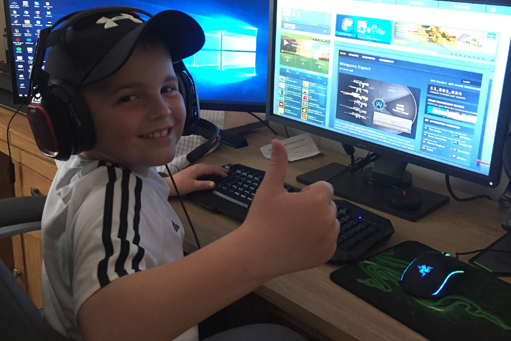

Šíření vášně a lásky ke hřeNaše stránka je vytvořena s cílem šířit vášeň a lásku ke hře CS:GO. Věříme, že CS:GO je nejenom hra, ale také komunita lidí, kteří sdílí společnou vášeň a nadšení pro tento e-sport. Každý, kdo se ponoří do světa CS:GO, zažije jedinečnou kombinaci vzrušení, strategie a soutěživosti. A právě tuto vášeň a lásku ke hře chceme přenést na naši stránku. Sledujeme nejnovější události, výsledky a turnaje v CS:GO a poskytujeme aktuální informace hráčům a fanouškům z celého světa. Naše články a materiály se zaměřují na podrobné analýzy herních strategií, tipy a triky, novinky a zajímavosti ze světa CS:GO. Náš cíl je inspirovat a motivovat hráče všech úrovní, od začátečníků až po profesionály, aby se neustále zdokonalovali a dosahovali svých herních cílů. Sdílíme radost ze vylepšování dovedností, objevování nových taktik a navazování strategických spojenectví. Věříme, že šíření vášně a lásky ke hře CS:GO je klíčové pro rozvoj e-sportu jako celku. Naše stránka je místem, kde hráči mohou najít inspiraci, podporu a sdílet své zážitky s ostatními, což posiluje celou komunitu CS:GO. |
 |
|  |
Provozování kvalitního obsahuNaše stránka je založena na principu poskytování kvalitního obsahu, který naplňuje potřeby a očekávání naší komunity CS:GO. Věříme, že správný obsah může hráčům a fanouškům CS:GO poskytnout hodnotnou informaci, inspiraci a zábavu. Snažíme se být nejenom zdrojem aktuálních informací o CS:GO, ale také prostředím, ve kterém se hráči a fanoušci mohou dozvědět více o hře, její strategii, herních mechanismech a novinkách. Poskytujeme podrobné analýzy profesionálních zápasů, rozhovory s předními hráči a trenéry, návody a tipy pro zlepšení herních dovedností a mnoho dalšího. Důležitou součástí našeho provozu je pečlivá kvalitativní kontrola obsahu. Snažíme se zajistit, že všechny články, rozhovory a informace jsou spolehlivé, přesné a aktuální. Pracujeme s odborníky v oblasti CS:GO (Přiživovači), abychom získali hlubší vhled do hry a poskytli návštěvníkům nejlepší možný obsah. Rovněž si uvědomujeme, že komunita CS:GO je rozmanitá a různorodá. Snažíme se tedy poskytovat obsah, který je přístupný a zábavný pro hráče všech úrovní a všech věkových skupin. Bez ohledu na to, zda jste začátečníkem, zkušeným hráčem nebo jen vášnivým fanouškem, naše stránka má co nabídnout pro každého. Věříme také v interakci s naší komunitou. Sledujeme zpětnou vazbu a nápady našich návštěvníků, abychom neustále vylepšovali a přizpůsobovali náš obsah jejich potřebám. Chceme, aby naše stránka byla místem, kde se lidé cítí vítáni, podporováni a inspirováni. |
Podpora amatérských hráčůJednou z našich hlavních priorit je podpora a rozvoj amatérských hráčů CS:GO. Věříme, že každý hráč má potenciál dosáhnout vynikajících výkonů a objevit své schopnosti v této úžasné hře. Naše stránka se zaměřuje na poskytování podpory a zdrojů, které pomáhají amatérským hráčům dosáhnout svých herních cílů. Rozumíme, že začátky mohou být náročné. Proto nabízíme návody, tipy a rady, které pomáhají hráčům vylepšit své dovednosti, porozumět herním mechanikám a vybudovat si pevný základ pro úspěch v CS:GO. Zabýváme se různými aspekty hry, jako je aim, strategie, taktiky, rotace a další, abychom hráčům poskytli komplexní povědomí o hře. Snažíme se také vytvořit komunitní prostředí, ve kterém se amatérští hráči mohou navzájem podporovat a učit se od sebe. Organizujeme soutěže, turnaje a přátelská utkání, které umožňují hráčům získávat zkušenosti, testovat své dovednosti a navazovat nová přátelství. Naše stránka také sleduje amatérské turnaje a ligy, které se konají po celém světě. Poskytujeme informace o těchto událostech a umožňujeme hráčům a týmům se zapojit a získat cenné soutěžní zkušenosti. Věříme, že účast na amatérských turnajích může hráčům otevřít dveře do profesionálního e-sportu. |
 |